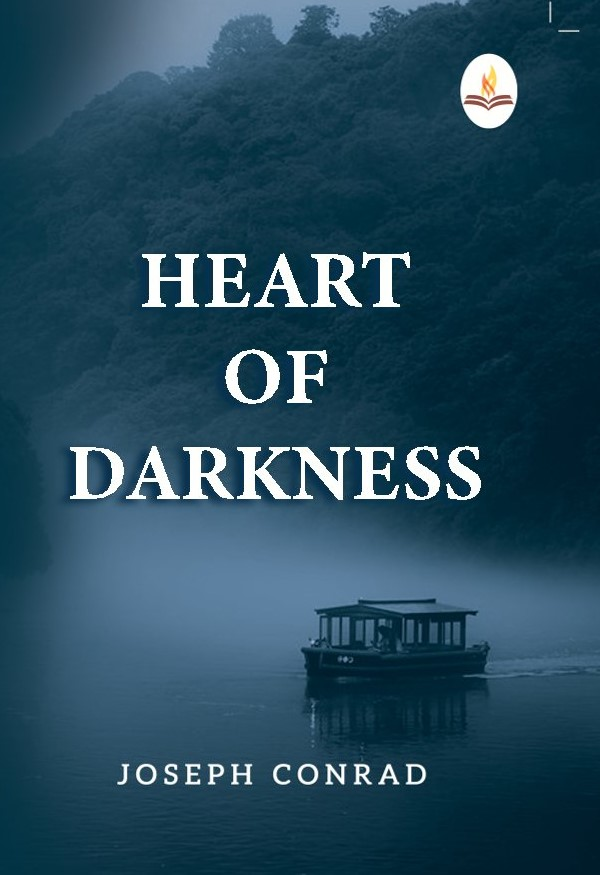
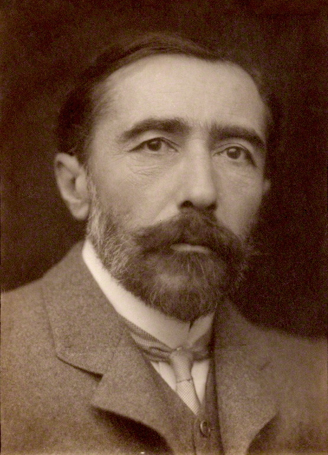
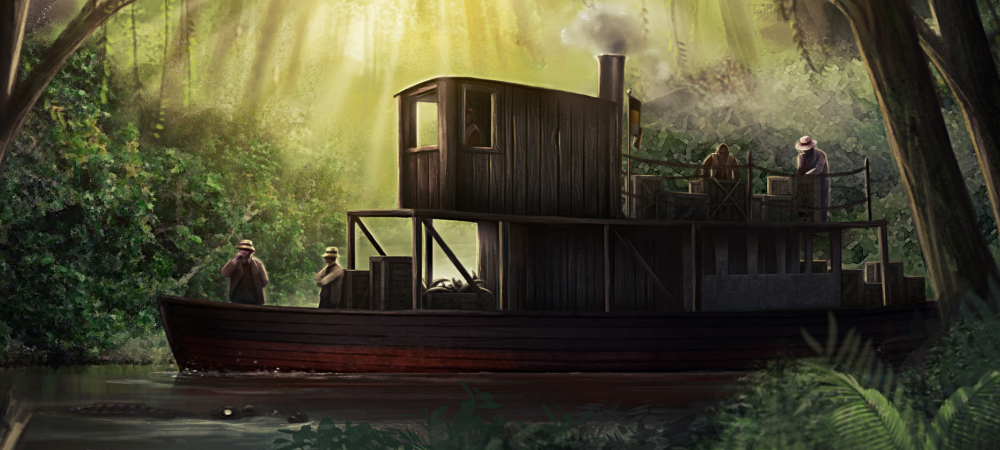

Обложка книги

Автор произведения

Река Конго

О произведении
Изображения помогают представить атмосферу произведения: далёкие путешествия, густые леса Африки и загадочный мир реки Конго.
Центральное место в истории занимает путешествие Марлоу, которое постепенно превращается в исследование человеческой природы.